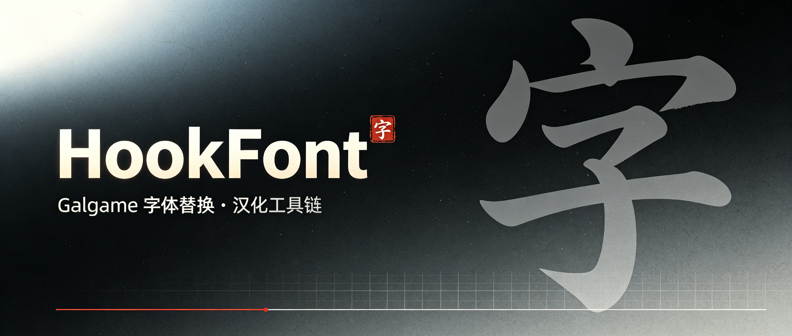

HookFont 字体替换引擎
日系 Galgame 字体替换 / 汉化工具链 —— 双击启动器，Detours 挂起创建游戏进程并注入 Hook DLL，Hook GDI、DirectWrite 与 GDI+ 字体创建 API，强制替换字符集与字体，让日文游戏正确显示中文。
日系 Galgame 字体替换 / 汉化工具链 —— 双击启动器，Detours 挂起创建游戏进程并注入 Hook DLL，Hook GDI、DirectWrite 与 GDI+ 字体创建 API，强制替换字符集与字体，让日文游戏正确显示中文。
从 GDI 到 DirectWrite 全覆盖，支持按字体精确映射与候选回退。
Hook CreateFontA/W、CreateFontIndirectA/W 四个 GDI 字体创建 API，统一替换为配置的字符集 + 字体。
对 Shift-JIS 引擎（AGE 等日系 galgame 引擎）只换字体名、保留引擎请求的字符集，避免强制 GB2312 把引擎文本按错误编码解析成"赛赛赛 / 记记记"乱码；配合中日兼容字体（微软雅黑 / MS Gothic）在不动编码的前提下换字体。
Hook IDWriteFactory::CreateTextFormat、CreateTextLayout 与 IDWriteTextLayout::SetFontFamilyName（vtable 补丁，无 dwrite.lib 依赖），覆盖 WPF / Unity 等现代引擎，运行时改字体也生效。
Hook GdipCreateFontFamilyFromName、GdipCreateFont（family+size 一步建字体，含缓存 family）与 GdipCreateFontFromLogfontA/W，走 GDI+ 的老游戏 / 引擎全部覆盖。
启动时校验 FontName 与 [FontMap] 每个目标字体是否已安装，缺失在日志标 [FontCheck] 告警——"字体没换过来"一眼定位。
[FontMap] 段支持"原字体名 → 新字体名"替换，优先于全局替换；支持 * / ? 通配符模糊匹配（精确优先）。
FontName 支持逗号分隔候选列表（含全角逗号），自动选用第一个系统已安装的字体。
把 *.ttf/*.ttc/*.otf 放进 DLL 同目录 fonts\，启动时自动 AddFontResource 注册，免手动安装、免管理员权限。
基于 Microsoft Detours 挂起创建目标进程并注入 DLL，稳定可靠；DLL 自身目录解析 INI，不依赖工作目录。
HookFont.exe -pid <PID> 直接向已运行进程注入——Steam / 官方启动器拉起游戏、或需进主菜单后再挂补丁的场景。
HookFont.exe <game.exe> [参数...] 直接指定游戏并透传启动参数，无需改 ini。
32 位与 64 位游戏均可使用，仓库附带 Detours x86 + x64 双平台静态库。
Hook CreateWindowExA/W 与 SetWindowTextA/W 四 API，创建窗口与运行时改标题都被替换（宽字符安全）。
[CharMap] 逐字符映射表，文本经 ExtTextOut/TextOut 绘制前逐字替换——引擎锁定字体、字符变豆腐块时的兜底。
同一 [CharMap] 作用于 GetGlyphOutlineA/W 字形查询，覆盖直接抓取字形位图的老 DirectX 引擎。
EXE / DLL 路径自动转 8.3 短路径，中文目录 / 文件名完全兼容。
从工作线程延迟执行 Hook，规避加载器锁死锁风险，DisableThreadLibraryCalls 已启用。
运行日志落盘（HookFont.log），失败原因可追查，不弹窗卡游戏。
墨黑底 + 朱砂「字」印 —— 日系 Galgame 字体替换工具链的视觉标识。

项目横幅 · 墨黑宣纸质感 · 朱砂印章点缀
三步完成：把三个文件放进游戏目录，记事本改一下配置，双击启动器即可。
从 Releases 下载，把 HookFont.dll / HookFont.exe / HookFont.ini 三个文件一起复制到游戏所在目录。
记事本打开 HookFont.ini，填上游戏主程序名；可按需调整字符集、字体与映射。
TargetEXE 填游戏主程序 exe 名Charset 默认 0x86（GB2312）FontName 可写候选列表，如 黑体, 微软雅黑[FontMap] 精确映射个别字体启动器以挂起方式启动游戏并注入 Hook DLL，字体即被强制替换。
HookFont.exeHookFont.log# HookFont.ini —— 完整配置示例 [RiaLoader] TargetEXE = ojyousama.exe # 游戏主程序 TargetDLLCount = 2 TargetDLLName_0 = HookFont.dll TargetDLLName_1 = kDays.dll [HookFont] Charset = 0x86 # 0x86=GB2312 简体中文 FontName = 黑体, 微软雅黑, 宋体 # 候选列表，自动选首个已安装 CharsetSpoof = false # 字符集伪装：Shift-JIS 引擎（AGE 等）只换字体名、保留引擎字符集，避免乱码 HookCreateFontA = true HookCreateFontIndirectA = true HookCreateFontW = true HookCreateFontIndirectW = true HookDirectWrite = true # WPF/Unity 等现代引擎（含 CreateTextLayout） HookGdiplus = true # GDI+ 全链路（CreateFontFamily/CreateFont/FromLogfont） AutoInstallFonts = true # 自动注册 fonts\ 目录字体 HookWindowTitle = false HookTextOut = false # 字符级替换开关（配合 [CharMap]） HookGlyphOutline = false # 字形级替换开关（老 DirectX 引擎兜底） [FontMap] # 按字体替换，优先于全局；支持通配 MS Gothic = 黑体 MS* = 黑体 # 通配：所有 MS 开头的字体 [CharMap] # 逐字符替换（ExtTextOut/TextOut 文本） 「 = “ # 日文左引号 → 中文左引号 あ = 阿 # 字形近似的假名 → 汉字
启动器解析配置 → Detours 挂起创建进程并注入 DLL → 工作线程延迟执行字体 Hook。
覆盖传统 GDI 与现代 DirectWrite 两条渲染路径，兼顾按字体精确控制。
| Hook / 能力 | 默认 | 适用场景 |
|---|---|---|
CreateFontA · CreateFontW |
✔ 开启 | 传统 GDI 引擎游戏（绝大多数 Galgame） |
CreateFontIndirectA · CreateFontIndirectW |
✔ 开启 | 通过 LOGFONT 创建字体的 GDI 游戏 |
IDWriteFactory::CreateTextFormat · CreateTextLayout |
✔ 开启 | WPF / Unity 等 DirectWrite 现代引擎（含运行时改字体） |
IDWriteTextLayout::SetFontFamilyName |
✔ 开启 | DirectWrite 运行时动态改字体名的场景 |
GdipCreateFontFamilyFromNameGdipCreateFont / GdipCreateFontFromLogfontA/W（GDI+） |
✔ 开启 | 走 GDI+ 创建字体的老游戏 / 引擎（含缓存 family 与 LOGFONT 路径） |
[FontMap] 字体映射表 |
○ 可选 | 按"原字体 → 新字体"替换，支持 * / ? 通配，优先于全局 |
CharsetSpoof 字符集伪装 |
○ 可选 | Shift-JIS 引擎（AGE 等）只换字体名、保留引擎字符集，避免乱码 |
FontName 候选列表 |
○ 可选 | 逗号分隔，自动回退到首个已安装字体 |
fonts\ 目录自动安装 |
✔ 默认 | 启动时 AddFontResource 注册目录内 ttf/ttc/otf，免手动安装 |
-pid 注入已运行进程 |
○ 可选 | Steam / 启动器拉起游戏后再挂补丁（位数需匹配） |
| 窗口标题替换（CreateWindowEx + SetWindowText） | ○ 可选 | 翻译补丁常用；创建窗口与运行时改标题都生效 |
ExtTextOut / TextOut 字符级替换 |
○ 可选 | [CharMap] 逐字符映射，锁定字体/豆腐块时的兜底 |
GetGlyphOutline 字形级替换 |
○ 可选 | 同一 [CharMap]，覆盖直接抓字形位图的老引擎 |
| 位图自绘字体（部分引擎） | ✘ | 由引擎直接绘制位图，不经字体 API，无法替换 |
需要 Visual Studio 2022（C++ 桌面开发）；仓库内置 GitHub Actions 自动构建。
# 构建 Release x86 / x64（32 位游戏用 x86，64 位游戏用 x64） MSBuild.exe HookFont.sln /t:Rebuild /p:Configuration=Release /p:Platform=x86 MSBuild.exe HookFont.sln /t:Rebuild /p:Configuration=Release /p:Platform=x64 # 或推送到 main，由 CI 自动构建双版本并产出 Artifact git push origin main
-pid 注入时目标进程位数也必须与启动器一致。FontName / 映射目标若系统没装，把字体文件放进游戏目录 fonts\ 子目录即可自动注册，无需手动安装。HookCreateFontW；极端冲突也可试关 HookDirectWrite / HookGdiplus。